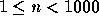
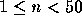
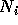

| Stars |
On a clear moon-less night, you can see millions of stars glimmering in the sky. Faced with this overwhelming number, the Greeks started nearly 2,000 years ago to bring some order to the chaos. They identified groups of stars, called constellations, and gave them names, mostly from the Greek mythology, that are still in use today. Examples are ``Ursa Minor'', ``Pisces'', ``Cancer'', and many others.
Given a sketch of the constellation, it is not easy for the amateur to actually find the constellation in the sky. Moreover, simple constellations, such as ``Triangulum'' (triangle,) which consists of only three stars, may appear several times in the sky. Again, singling out the ``correct'' occurrence is not easy.
Traditionally, maps were printed for just this purpose. But in this problem, we will see how the computer can help us find constellations in the sky.
You will be given a star map; for simplicity this will be a collection of points in the plane, each having a certain brightness associated with it. Then, given a constellation, also as a set of points in the plane, you are to determine:
An occurrence is a subset of stars from the map that forms a (possibly) arbitrarily rotated and/or scaled copy of the stars in the constellation.
The brightness of an occurrence is the average brightness of the stars it consists of, i.e. the sum of individual brightnesses divided by the number of stars in the constellation.
The input file contains the descriptions of several star maps. Each map starts with a line containing a single integer n, specifying the number of stars in the map (  ). The following n lines contain three integers each, namely the x- and y-coordinates and the brightness of every star. The larger the value, the brighter the star shines.
The next line contains a single integer m, the number of constellations to follow (  ). Each constellation description starts with a line containing an integer , the number of stars in constellation i, and a string  , the name of the constellation. ( will consist of no more than 40 characters and contain no blanks.) The following lines then contain the coordinates of the constellation, again as x/y-pairs.
A blank line separates the star map from the next map. The input file ends with an empty map (having n = 0), which should not be processed.
N.B.: Since all star coordinates are integer numbers, you can easily rule out any rotated or scaled constellation whose points do not fall on integer coordinates.
For each star map first output the number of the map (`Map #1', `Map #2', etc.) on a line of its own.
For each constellation, in the same order as in the input, output first its name and how many times it occurs in the map on one line, as shown in the output sample.
If there is at least one occurrence, output the position of the brightest occurrence by listing the positions of the stars that form the brightest occurrence. The star positions have to be printed in ascending x-order. Positions having the same x-coordinates must be sorted in ascending y-order. If there are several equally bright solutions, output only one of them. Adhere to the format shown in the sample output.
Output a blank line before each constellation and a line of 5 dashes (`-----') after every star map.
6 1 2 1 2 1 4 2 4 3 3 2 1 4 1 5 4 3 2 2 3 Triangulum 1 1 3 1 2 4 4 Cancer 1 3 4 3 6 1 7 5 0
Map #1 Triangulum occurs 2 time(s) in the map. Brightest occurrence: (1,2) (4,1) (4,3) Cancer occurs 0 time(s) in the map. -----